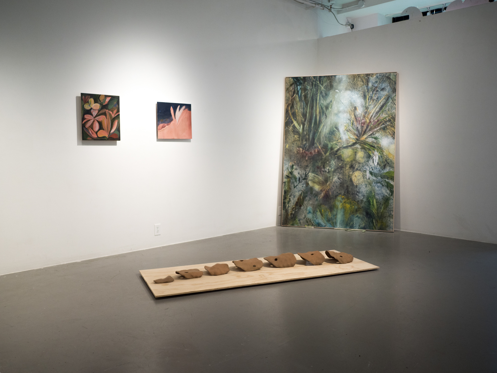
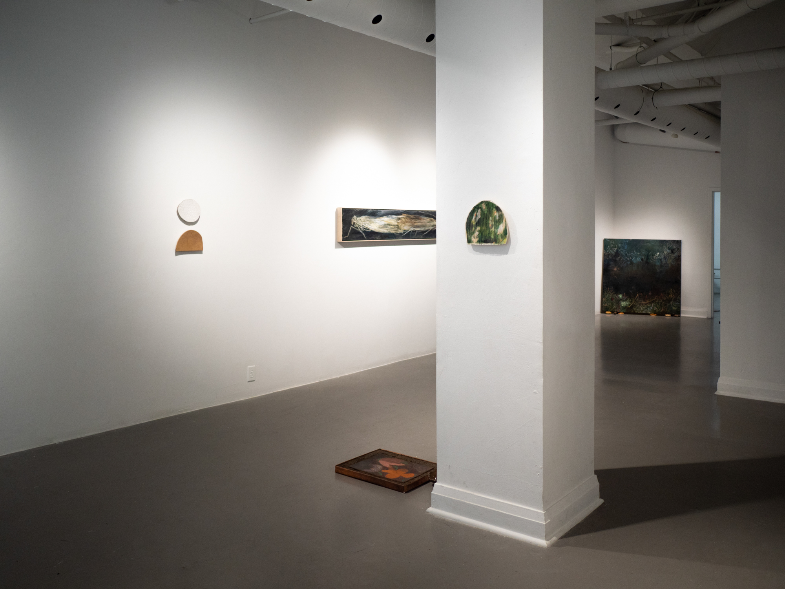
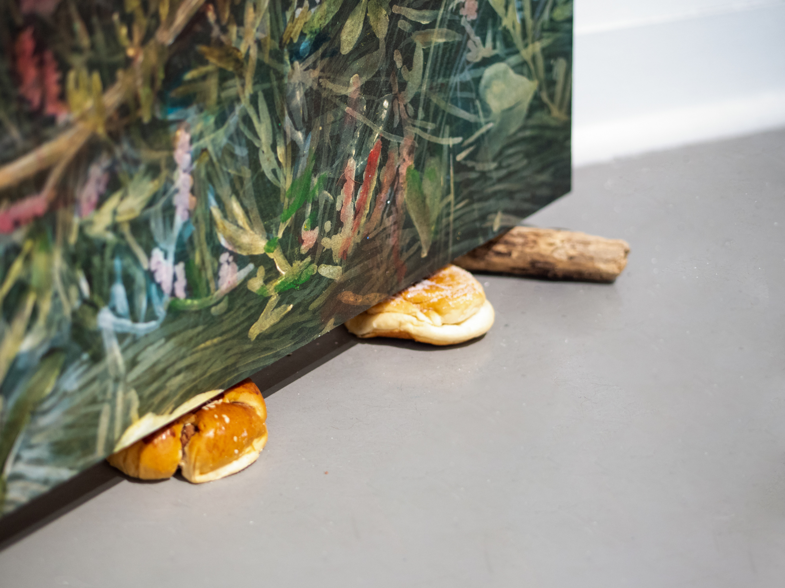

back
An Observable Collapse Towards Another
Xpace Cultural Centre, September 7 - October 13, 2018
Curated by Rowan Lynch
Featuring works by Benjamin de Boer, Andrew Hoekstra, Sara Kay Maston & Cadence Planthara
An Observable Collapse Towards Another offers representation of the natural world through artworks that aim to render visible that which humans cannot, or do not usually perceive. The painting, ceramic, and object based works demonstrate an ecological concern investigating topics ranging from the inhuman perspective of echolocation, biological contamination, flora as metaphor for explorations of identity, and an invocation of Toronto’s waterways through the folk practice of dowsing. The works inevitably call to mind the searing reality of anthropogenic climate change, but reject individualistic nihilism as response, instead favoring narratives of social, interrelating existence.
For more information see Xpace
Cadence Plathara, Flower Paintings; Sara Kay Maston, Eyes That See In The Dark; Andrew Hoekstra, Feelers From the Grotto. Photo credit: Polina Teif.

Sara Kay Maston, Eyes That See In The Dark, detail. Photo credit: Polina Teif

Cadence Planthara, Flower Paintings. Photo credit: Polina Teif.
Exhibition View. Photo credit: Polina Teif.

Sara Kay Maston, Mother. Photo credit: Polina Teif.
Sara Kay Maston, Mother, detail. Photo credit: Polina Teif.